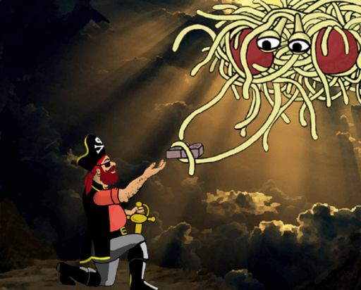

El Pastafarismo parte de la base de los Ocho Realmente-preferiría-que-no-hicieras (también conocidos como los Ocho Condimentos), que son las enseñanzas que MonEsVol dejó a los humanos para una vida espiritual completa.
Los primeros escritos pastafaris indican que el Capitán Mosey recibió los escritos directamente de Monesvol en la cima del Monte Salsa, en forma de diez tablas de piedra. Estos escritos fueron nombrados como Los Diez Realmente-Preferiría-que-no-hicieras, aunque el Capitán Mosey los llamó Los Diez Comandamientos.

En el camino de vuelta al barco Lasaña, Mosey perdió (se le cayeron) dos de las tablas, que se perdieron para siempre; al llegar presentó a la tripulación los textos como Los Ocho Comandamientos, aunque la tripulació lo entendió como Los Ocho Condimentos, al desconocer la palabra comandamiento.

- Primer Condimento
Realmente preferiría que no actuases como un fanático religioso santurrón que se cree mejor que los demás cuando describas mi tallarinesca santidad. Si algunos no creen en mí, no pasa nada. En serio, no soy tan vanidoso. Además, esto no es acerca de ellos, así que no cambies de tema.
- Segundo Condimento
Realmente preferiría que no usases mi existencia como un medio para oprimir, subyugar, castigar, eviscerar, y/o… ya sabes, ser malo con otros. Yo no requiero sacrificios y la pureza es para el agua mineral, no para la gente.
- Tercer Condimento
Realmente preferiría que no juzgases a las personas por su aspecto, o por cómo visten, o por la manera en que hablan, o por… mira, solo sé bueno ¿vale? ¡Ah! y métete esto en la cabeza: mujer = persona, hombre = persona, Samey = Samey, ninguna es mejor que el resto, a menos que hablemos de moda claro, lo siento, pero eso se lo dejé a las mujeres y a algunos hombres que conocen la diferencia entre aguamarina y fucsia.
- Cuarto Condimento
Realmente preferiría que no tuvieras una conducta que te ofenda a ti mismo o a tu compañía amorosa mentalmente madura y con edad legal para tomar sus propias decisiones. Respecto a cualquiera que quiera objetar algo, creo que la expresión más apropiada es ¡jódete!, a menos que lo encuentre ofensivo, en cuyo caso puede apagar la televisión y salir a caminar, para variar.
- Quinto Condimento
Realmente preferiría que no desafiaras las ideas fanáticas, misóginas y odiosas de otras personas con el estómago vacío. Come, luego puedes ir tras los malditos.
- Sexto Condimento
Realmente preferiría que no construyeras iglesias / templos / mezquitas / santuarios multimillonarios en honor a mi tallarinesca santidad cuando el dinero podría ser mejor gastado en (tú eliges):
terminar con la pobreza
curar enfermedades
vivir en paz, amar con pasión, y bajar el precio de la televisión por cable
Puedo ser un ser omnipresente de carbohidratos complejos, pero disfruto de las cosas sencillas de la vida. Yo lo sé, para eso SOY el creador. - Septimo Condimento
Realmente preferiría que no fueses por ahí contándole a la gente que te hablo. No eres tan interesante. Madura ya. Te dije que amaras a tu prójimo, ¿no entiendes las indirectas?
- Octavo Condimento
Realmente preferiría que no le hicieses a los otros lo que te gustaría que te hiciesen a ti si te gustan las… ehm… las cosas que usan mucho cuero / lubricante / Las Vegas. Si a la otra persona también le interesa (conforme al condimento #4), entonces disfrútenlo, sáquense fotos y, por el amor de Mike, ¡usad PRESERVATIVO! En serio, es un pedazo de goma. Si no hubiera querido que disfrutaras al hacerlo habría añadido púas, o algo.